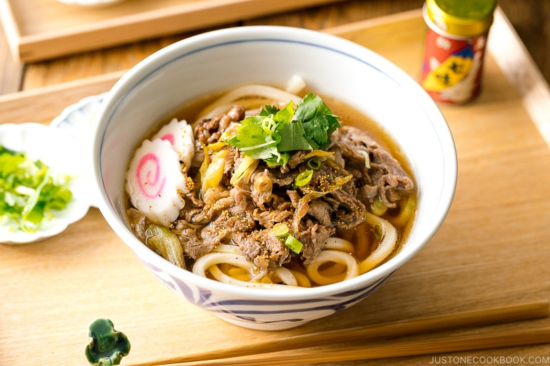

Famous Japanese Foods and Beverages
That You Must Try!
This is a shortlist of Japanese foods worth trying.Estimated Reading times: 5 minutes.

Japan is not only a country famous for the technological advances developed by its people, but Japan is also famous for its unique traditional food and indeed has its fans all over the world. Here is a compilation of a list of Japanese foods that we think many people should try once in their lives.
1/10
Sushi
Sushi is a Japanese word that refers to any food produced with rice vinegar and seasoned with it. When we think of
Japanese cuisine, it's one of the first things that comes to mind. It is a Japanese dish consisting of tiny pieces of
raw fish wrapped in rice and seaweed. Sushi is now mass-produced using machines, yet good sushi is still made by hand.
Sushi is available at Japanese restaurants such as Sushi King, Sakae Sushi, and even Family Mart in Malaysia.
2/10
Tempura
If you like crunchy fried dishes, tempura is for you. Tempura is a combination of meat, fish, and vegetable pieces
or slices that have been dipped in a unique tempura batter and deep-fried till crisp and pale gold. It's delicious on
its own or on top of rice bowls or noodle soups.

3/10
Ramen
Ramen is a Japanese noodle soup made with whole wheat noodles, a flavorful broth, meat toppings, scallions, nori seaweed, and other ingredients. Ramen comes in a variety of flavours, including Shio (salt-based ramen), Shoyu (soy- sauce-based ramen), Miso (soybean paste-flavoured ramen), and Tonkotsu (pork bone broth ramen) and instant cup ramen as well.
4/10
Soba
Soba, often known as 'buckwheat noodle,' is one of the three main types of noodle eaten in Japan. Soba noodles, unlike Udon and Ramen, are manufactured partially from buckwheat flour. It can be served hot in soups with spring onions and agetama tempura flakes, or chilled with tsuyu and green onions, shredded nori seaweed, and wasabi garnishes.
5/10
Oden
Oden is a Japanese one-pot dish, consisting of boiled eggs, daikon carrots, tofu, processed fish cake and other ingredients. In Japan, this dish is best served during the winter because its deliciousness and delicacy can amaze anyone hungry during the season. In Malaysia, the best Oden is served at The Tokyo Restaurant, Isetan Japan Store, Bukit Bintang, Kuala Lumpur.

6/10
Takoyaki
Takoyaki is one of the most well-known Japanese street foods. It's also known as an 'octopus ball,' since it's loaded with sliced squid, leftover tempura, ginger pickles, and green onions in a batter infused with dashi (dry seaweed and chunks of fish). Usually, Takoyaki will be served with toppings such as takoyaki sauce, Japanese mayonnaise and seaweed flakes making it a delicious Japanese snack.
7/10
Miso soup
Miso soup is a Japanese-style side dish served during breakfast, lunch and dinner. It can be considered a healthy food as it contains fermented soybeans that help digestion and supply good probiotics. This soup also can be added to several ingredients such as tofu, vegetables and seaweed.

8/10
Edamame
Edamame is a Japanese meal that consists of immature soybeans served in pods. These little green beans are high in minerals, proteins, and antioxidants, making them a high-energy and high-fiber food. They're gluten-free by nature, low in calories, and high in vital fatty acids.

9/10
Matcha Tea
Matcha is a finely powdered Japanese green tea powder derived from dried tea leaves. It tastes a little bitter, vegetative and a bright green colour due to the high chlorophyll content in the leaves. For generations, it has been a staple of traditional Japanese tea ceremonies, but it has only lately gained popularity in the United States due to its health advantages.

10/10
Udon
Udon is made from concentrated wheat flour noodles that are popular in Japanese cuisine. It is thicker than Soba noodles, white and chewier. For many Japanese folks, it is a comfort dish. It can be made and served in a variety of ways (hot and cold). Udon can be found in various types but the Kitsune Udon and Curry Udon are the most famous.
Bonus: Japanese Desserts and Sweets!
While Japan is famous for its variety of traditional foods, there are also a wide variety of desserts and sweets that look unique and delicious to serve together. Most desserts will be served after the main course as a meal at the end of the meal.

1/3
Dorayaki
If you’ve ever watched the famous anime television series Doraemon, you will be probably familiar with Dorayaki. It consisted of two small fluffy pancake-like slices of bread wrapped with a sweet azuki bean paste filling. It is very favoured among children as well adults in Japan.
2/3
Taiyaki
In Japan, you can find Taiyaki (Japanese baked cake) at most street vendors and restaurants. Just like Dorayaki, Taiyaki is also filled with red bean paste but it is made in the shape of a red sea bream. In Malaysia (Klang Valley), you can try Taiyaki at Croissant Taiyaki, Tanoshii Dezato, Taiyaki House and Mykori Dessert Cafe as well.

3/3
Kohi Zeri
Kohi Zeri, also known as coffee jelly, has become increasingly popular in Japan. This drink's key ingredient is simple and easy to prepare. Gelatin, espresso coffee, condensed milk, sugar, and, of course, water are all that is required. If you enjoy coffee, try combining this jelly recipe with a cup of hot milk and indulging your taste buds in the mouth-watering texture of this delectable treat.